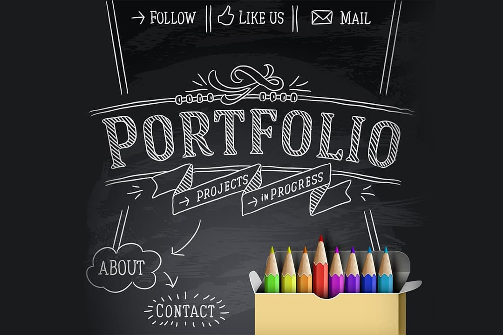

Hello, I'm
Rohit Kumar
Professional
Passionate about software development, machine learning, and building innovative systems. Expertise in Python, C/C++, Java, Kotlin, HTML/CSS, and Data Structures & Algorithms.
Passionate about software development, machine learning, and building innovative systems. Expertise in Python, C/C++, Java, Kotlin, HTML/CSS, and Data Structures & Algorithms.
Here are some of my recent projects. Click on any project to learn more.
Designed a recommendation system using unsupervised machine learning and clustering to suggest movies based on similarity patterns.
Console-based simulation modeling user mental states and history utilizing Data Structures & Algorithms and OOP concepts.
Developed to identify deadlock conditions in OS via resource allocation graphs and process-resource mapping tracking.
A comprehensive Learning Management System featuring user dashboards, course enrollment, DSA practice modules, and an integrated multi-language code compiler.
A smart food ordering and pickup web application designed for quick, affordable meals. Features a complete cart system, online payments, and scheduled pickup times.

Modern and responsive portfolio website showcasing projects, skills, and experience with smooth animations and interactions.
{kind=link}